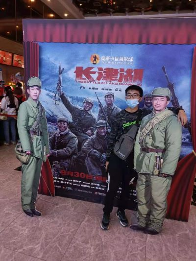

钟意
I am more cheerful personality, from the first year of high school often go out to make friends from different countries, and have been keeping in touch, have a good ability to communicate with people. Summer vacation or usually spare time, help a friend part-time translation or out of the container, run the market.
秦建泽
I am cheerful and enjoy watching movies and cartoons, especially tokusatsu. I am good at communicating with people, hoping to become friends with more people and get along well with others. I think getting along with others will be a good learning process.
张成秀邦
I am cheerful, peaceful and friendly. I usually like playing games, drawing and playing guitar. In learning, I like to learn and progress together with my classmates.
何昌泽
I am cheerful personality, like exercise, willing to accept new things, willing to make friends with the same people. And believe, desperately burning life, blooming the most brilliant fireworks.
胡景程
MY name is Liu Junrui。Social buffoonism is a way to cover up my feelings and shyness. Krypton did not change my life, so I became a "good habit" of Buddhism. Loving to eat but easy to be fat, loving to sleep but hard to fall a sleep and get up , loving to play but always defeated. In front of others love to play handsome, in a person alone love giggle. My tenet is: the world is so big, where is not happy?
苏凯文
A gamer, love a variety of technologies, but do not know anything. Popular games have dabbled in each, recently in the study of C language programming, just bought a book to learn, welcome everyone to exchange with me to learn. I have a casual personality, like quiet, hope to be friendly with everyone.